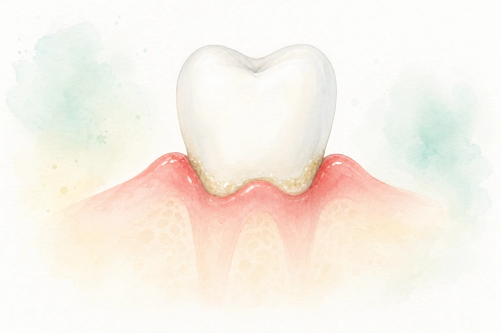

Saliva menos protetora
Boca seca e alterações na saliva podem facilitar acúmulo de placa e desconforto oral.
Saúde bucal e metabolismo
A placa bacteriana pode iniciar inflamação gengival. O diabetes mal controlado aumenta o risco periodontal. E a periodontite pode dificultar o controle da glicemia.
Ponto de partida
O biofilme dentário é uma comunidade de microrganismos que se prende aos dentes e à margem da gengiva. Quando ele se acumula por muito tempo, pode provocar gengivite e evoluir para periodontite, uma inflamação que atinge os tecidos de suporte dos dentes.
Em pessoas com diabetes, especialmente quando a glicemia permanece elevada, essa resposta inflamatória pode ser mais intensa. Ao mesmo tempo, a periodontite mantém uma carga inflamatória que pode atrapalhar o controle glicêmico.
Microrganismos aderem aos dentes e irritam a margem gengival.
Gengiva sangra, tecidos inflamam e podem surgir bolsas periodontais.
O diabetes influencia a boca, e a inflamação bucal pode influenciar o metabolismo.
Por que o risco aumenta
A hiperglicemia crônica interfere na saliva, na defesa do organismo, na cicatrização e na intensidade da inflamação.
Boca seca e alterações na saliva podem facilitar acúmulo de placa e desconforto oral.
Células de defesa podem responder com menos eficiência contra infecção e inflamação.
Mediadores inflamatórios podem aumentar a destruição dos tecidos periodontais.
Alterações no colágeno e na microcirculação podem dificultar a recuperação da gengiva.

Da gengivite à periodontite
O que os estudos mostram
Revisões científicas indicam que o tratamento periodontal em pessoas com diabetes e periodontite pode reduzir modestamente a HbA1c nos meses seguintes ao cuidado.
Isso não substitui tratamento médico, medicação, alimentação ou acompanhamento profissional. É um cuidado complementar dentro de uma rotina de saúde integrada.
de redução média de HbA1c em 3 a 4 meses após tratamento periodontal, segundo revisão Cochrane.
Sinais de alerta
Cuidado integrado
A prevenção combina hábitos diários, limpeza profissional, controle glicêmico e troca de informações entre dentista e equipe médica.
Escovação cuidadosa, fio dental ou escova interdental ajudam a reduzir placa na margem gengival.
Consultas regulares permitem medir bolsas, remover cálculo e identificar inflamação cedo.
Informe diagnóstico, medicamentos e, quando possível, a HbA1c recente ao cirurgião-dentista.
O controle metabólico ajuda a proteger gengiva, cicatrização e resposta ao tratamento.
Equipe